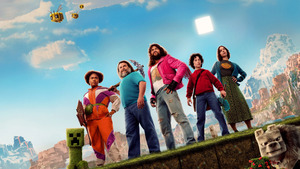
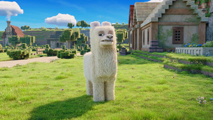
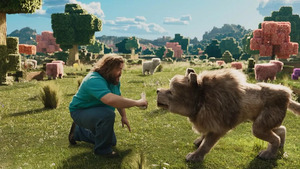
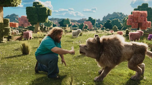

Traile
Información
- Título original: A Minecraft Movie
- Estado: Estrenada
- Idioma original: Inglés
- Presupuesto: $150,000,000.00
- Ingresos: $323,380,122.00
Vista general
Cuatro inadaptados se encuentran luchando con problemas ordinarios cuando de repente se ven arrastrados a través de un misterioso portal al Mundo Exterior: un extraño país de las maravillas cúbico que se nutre de la imaginación. Para volver a casa, tendrán que dominar este mundo mientras se embarcan en una búsqueda mágica con un inesperado experto artesano, Steve.
Reparto Principal
- Jason Momoa Garrett
- Jack Black Steve
- Sebastian Eugene Hansen Henry
- Emma Myers Natalie
- Danielle Brooks Dawn
- Jennifer Coolidge Vice Principal Marlene
Galería
  
